# entrepreneurshippj_thesis
<!DOCTYPE html>
<html lang="ja">
<head>
<meta charset="UTF-8">
<meta name="viewport" content="width=device-width, initial-scale=1, viewport-fit=cover">
<title>早稲田大学高等学院 起業・投資プロジェクト 論文集</title>
<style>
  :root {
    --navy-900: #071a3a;
    --navy-800: #0b2554;
    --navy-700: #12346f;
    --navy-200: #b9c6e0;
    --white: #ffffff;
    --line: rgba(255,255,255,.18);
    --font: "Hiragino Kaku Gothic ProN", "Hiragino Sans", "Noto Sans JP", "Yu Gothic", "Meiryo", sans-serif;
  }
  * { box-sizing: border-box; }
  html { -webkit-text-size-adjust: 100%; }
  body { margin: 0; font-family: var(--font); }

  /* ================= ホーム ================= */
  body.home {
    background: var(--navy-900);
    color: var(--white);
    min-height: 100vh;
    min-height: 100dvh;
  }
  .home-header {
    background: var(--navy-900);
    padding: max(28px, env(safe-area-inset-top)) 24px 8px;
    display: flex;
    justify-content: center;
  }
  .home-header img {
    display: block;
    width: min(360px, 70vw);
    height: auto;
  }
  .home-main {
    max-width: 760px;
    margin: 0 auto;
    padding: 32px 24px calc(64px + env(safe-area-inset-bottom));
  }
  .home-title {
    font-size: clamp(20px, 4.6vw, 28px);
    font-weight: 700;
    letter-spacing: .08em;
    line-height: 1.5;
    margin: 0 0 6px;
    text-align: center;
  }
  .home-sub {
    text-align: center;
    color: var(--navy-200);
    font-size: 14px;
    letter-spacing: .1em;
    margin: 0 0 40px;
  }
  .paper-list {
    list-style: none;
    margin: 0;
    padding: 0;
    border-top: 1px solid var(--line);
  }
  .paper-list li { border-bottom: 1px solid var(--line); }
  .paper-list a {
    display: block;
    padding: 22px 12px;
    color: var(--white);
    text-decoration: none;
    font-size: clamp(16px, 4vw, 19px);
    line-height: 1.7;
    font-weight: 500;
    transition: background .2s, padding-left .2s;
  }
  .paper-list a small {
    display: block;
    color: var(--navy-200);
    font-size: .8em;
    font-weight: 400;
  }
  .paper-list a:hover { background: var(--navy-800); padding-left: 20px; }
  .paper-list a:focus-visible { outline: 2px solid var(--white); outline-offset: -2px; }
  footer.home-footer {
    text-align: center;
    color: var(--navy-200);
    font-size: 12px;
    letter-spacing: .08em;
    padding-bottom: 32px;
  }

  /* ================= 論文ページ ================= */
  body.paper { background: #fff; color: #111; }
  .back-bar {
    padding: max(14px, env(safe-area-inset-top)) 16px 10px;
    max-width: 1000px;
    margin: 0 auto;
  }
  .back-link {
    font-size: 14px;
    color: var(--navy-700);
    text-decoration: none;
    padding: 6px 2px;
    display: inline-block;
  }
  .back-link:hover { text-decoration: underline; }
  .pages { max-width: 1000px; margin: 0 auto; }
  .pages img {
    display: block;
    width: 100%;
    height: auto;
    margin: 0;
  }
  .back-bar.bottom { padding: 20px 16px calc(28px + env(safe-area-inset-bottom)); text-align: center; }

  [hidden] { display: none !important; }
</style>
</head>
<body class="home">

<!-- ===== ホーム ===== -->
<div id="home">
  <header class="home-header">
    
  </header>
  <main class="home-main">
    <h1 class="home-title">起業・投資プロジェクト 論文集</h1>
    <p class="home-sub">タイトルを選ぶと論文が開きます</p>
    <ul class="paper-list" id="paperList"></ul>
  </main>
</div>

<!-- ===== 論文 ===== -->
<div id="paperView" hidden>
  <div class="back-bar"><a class="back-link" href="#/">← 論文一覧へ戻る</a></div>
  <div class="pages" id="pages"></div>
  <div class="back-bar bottom"><a class="back-link" href="#/">← 論文一覧へ戻る</a></div>
</div>

<script>
/* ---------- 論文データ ---------- */
// prefix: ファイル名の接頭辞 / from〜to: 連番 / digits: 桁数
const papers = [
  {
    title: "金融政策から賢い消費選択をするために",
    subtitle: "金融政策と実社会のデータの比較",
    prefix: "早稲田大学高等学院-", from: 1, to: 8
  },
  {
    title: "未来の物流技術が促進する経済成長",
    prefix: "未来の物流技術が促進する経済成長-", from: 1, to: 24
  },
  {
    title: "金融コンテキストにおける統計・機械学習・深層学習の活用に関する考察",
    prefix: "早稲田大学高等学院-", from: 32, to: 38
  },
  {
    title: "ESG投資とは何なのか",
    subtitle: "個人投資家がESG投資をするには",
    prefix: "早稲田大学高等学院-", from: 39, to: 53
  },
  {
    title: "ストライキをしない国の処方箋",
    subtitle: "労働組合を改善した労働役制度の構想",
    prefix: "スライド-", from: 1, to: 14
  }
];

const pad = n => String(n).padStart(2, "0");

/* ---------- ホームの一覧を生成 ---------- */
const list = document.getElementById("paperList");
papers.forEach((p, i) => {
  const li = document.createElement("li");
  const a = document.createElement("a");
  a.href = "#/paper/" + (i + 1);
  a.textContent = p.title;
  if (p.subtitle) {
    const s = document.createElement("small");
    s.textContent = "～" + p.subtitle + "～";
    a.appendChild(s);
  }
  li.appendChild(a);
  list.appendChild(li);
});

/* ---------- 画面切り替え ---------- */
const homeEl = document.getElementById("home");
const viewEl = document.getElementById("paperView");
const pagesEl = document.getElementById("pages");

function show() {
  const m = location.hash.match(/^#\/paper\/(\d+)$/);
  const idx = m ? parseInt(m[1], 10) - 1 : -1;

  if (idx >= 0 && idx < papers.length) {
    const p = papers[idx];
    pagesEl.innerHTML = "";
    for (let n = p.from; n <= p.to; n++) {
      const img = document.createElement("img");
      img.src = p.prefix + pad(n) + ".png";
      img.alt = p.title + " " + (n - p.from + 1) + "ページ";
      img.loading = n - p.from < 2 ? "eager" : "lazy";
      img.decoding = "async";
      pagesEl.appendChild(img);
    }
    document.title = p.title;
    document.body.className = "paper";
    homeEl.hidden = true;
    viewEl.hidden = false;
  } else {
    document.title = "早稲田大学高等学院 起業・投資プロジェクト 論文集";
    document.body.className = "home";
    viewEl.hidden = true;
    homeEl.hidden = false;
    pagesEl.innerHTML = "";
  }
  window.scrollTo(0, 0);
}
window.addEventListener("hashchange", show);
show();
</script>
</body>
</html>
